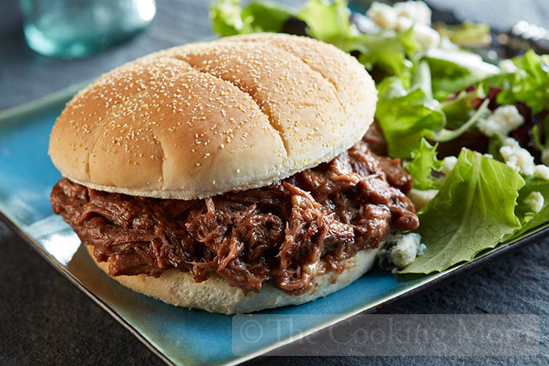

Bact to main page
PDQ Hot Beef Sandwiches

Description
An original recipe of PDQ Hot Beef Sandwiches
Ingredients
- 1 tablespoon vegetable oil
- 1 (4 pound) beef chuck roast
- 1 cup chili sauce
- ½ cup water
- ½ cup white vinegar
- 1 tablespoon chili powder
- salt and pepper to taste
- 1 teaspoon garlic powder, or to taste
- 2 teaspoons white sugar
Steps
- Heat vegetable oil in a large Dutch oven over medium-high heat. Place the roast in the pan, and brown on all sides.
- Reduce heat to medium-low, and pour in the chili sauce, water, and vinegar. Season with chili powder, salt, pepper, garlic powder and white sugar. Simmer over medium-low heat for 3 hours, or until meat is fork tender. Remove beef, and refrigerate overnight. Reserve sauce, and refrigerate.
- Slice or shred beef, and place in a large pot on the stove with the sauce. Heat through, and serve alone, or on your favorite sandwich buns.
Nutrition facts
Per Serving: 424 calories; protein 26.5g; carbohydrates 6.9g; fat 31.8g; cholesterol 109.1mg; sodium 412.4mg.